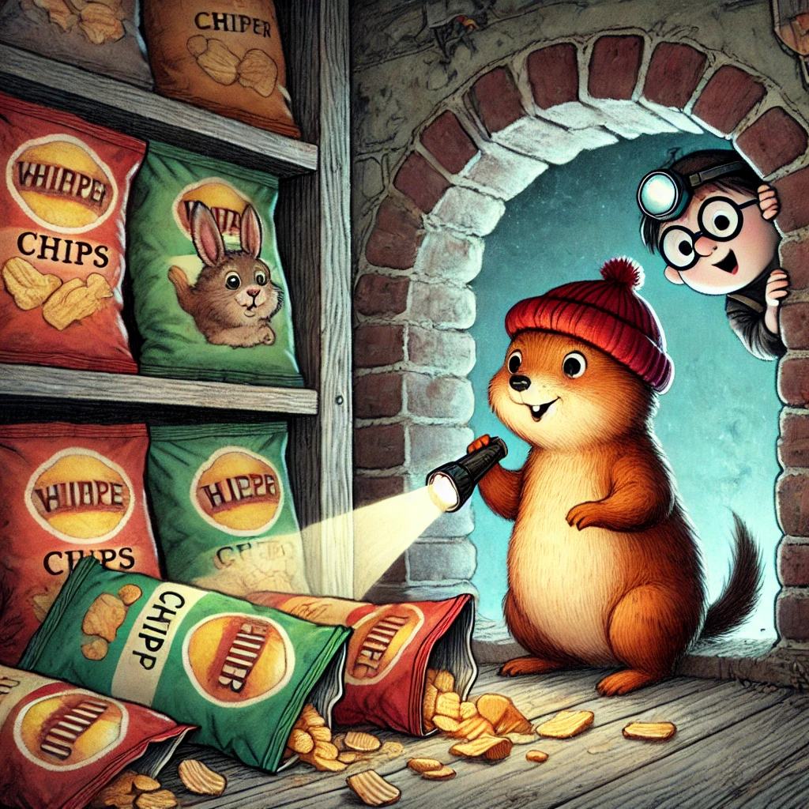

Es war einmal ein Wiesel namens Winnie, das oben auf dem Knabbereienregal eines Supermarkts in Leknes auf den Lofoten wohnte. Eines Tages, Winnie kletterte gerade ihr Regal hinunter, stieß sie eine ganze Reihe Chips-Packung um. Diese purzelten auf den Boden und Winnie überlegte gerade, ob das hieß, dass sie diese auf der Stelle essen sollte, als ihr ein Fenster auffiel, das hinter den heruntergefallenen Chips sichtbar geworden war.
Neugierig steckte Winnie ihren Kopf hinein. Ein dunkler Tunnel erstreckte sich vor ihr. Aufgeregt holte sie Biep und Herrn Hase herbei. Zu Tritt, mit Nachtwieselaugen und Bieps Lampe ausgestattet, tapsten sie mutig in den Gang hinein. Zweimal bogen sie links ab, dann rechts, bevor sie am Ende des Tunnels ein Licht sehen konnten. Sie rannten darauf zu. Winnie wollte bremsen, weil das Ende des Tunnels einen Meter über dem Boden des Raums an dessen Ende aufhörte, doch Biep und Herr Hase hatten nicht mit einem abrupten Halt gerechnet und so purzelten alle drei durch die Öffnung in einen geheimen Raum. Sie klopften sich den Staub aus den Kleidern und dem Fell und schauten sich um.
Um sie herum stapelten sich alle möglichen Schätze bis zur Decke: Osterschmuck, Kekse, die Winnie liebte, von denen sie glaubte, dass der Supermarkt sie für immer aus dem Sortiment genommen hatte, alte Hüte, ein Einrad, eine große Kiste voller Lollies und vieles mehr. Es war ein Paradies! Die drei wühlten und staunten. Das musste ein vergessener Lagerraum sein. Herr Hase, der mittlerweile ganz in ein Magier Kostüm eingekleidet war, bat um Aufmerksamkeit und führte einen perfekten Kartentrick vor. Winnie und Biep klatschen ausgelassen. Herr Hase war ein geborener Unterhalter!
Biep hatte sich einen ganzen Stapel alter Kreuzworträtsel unter den Arm geklemmt. Er liebte es, in seinen Pausen in der Kasse zu rätseln. Winnie hatte eine Leinentasche mit dem Aufdruck: "Wie lieben gutes Essen" gefunden und hatte sie randvoll mit ihren heißgeliebten Keksen gestopft. Sie versuchte diese nun durch die Öffnung in den Tunnel zu ziehen, blieb aber stecken. Sie musste die Hälfte zurücklassen, schwor sich aber, für den Rest zurückzukommen.
Als sie am anderen Ende des Tunnels wieder aussteigen, schoben sie sorgfältig große Chipstüten vor die Öffnung. Dieser Traumort sollte ihr Geheimnis bleiben!